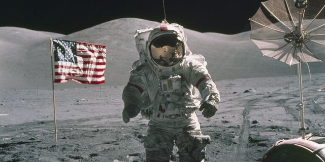

Portfolio
Min portfolio består av lite mer lyckade projekt och lite mindre lyckade projekt. Ibland kan gränsen för vad som är ett lyckat eller misslyckat projekt vara hårfin. Ett misstag kan många gånger visa sig vara en möjlighet. Och vissa gånger så är projektet lyckat, men helgar medlen alltid målet? Jag har iallafall försökt att dela upp dem i olika delar så gott det går här nedan.
Lyckade Projekt
Pyramiderna i Giza
De världsberömda pyramiderna från ca 2500 f.kr tog med den tidens teknologi flera hundra år att bygga. Arbetsvillkoren var inte de bästa, men det detta inräknat så får detta ändå räknas som ett lyckat projekt då det som enda underverk från antiken står kvar än idag.

Månlandningen
Den 20 juli 1969 landar the Eagle på månens yta medan hela världen håller andan. Ut stiger Neil Armstrong och yttrar de idag berömda orden: "one small step for man, one giant leap for mankind". Hela besättningen kom hem oskadda och banade vägen för fler månlandningar inom apolloprogrammet.
Illuminati
För flera tusen år sedan så bildade jag illuminati. Det är en orden där jag har valt ut förmögna och inflytelserika, samt andra utomjordingar att styra planeten Jorden. Att vi har styrt så länge och att de flesta inte tror att vi existerar måste räknas som en stor framgång. Great success!
Misslyckade projekt
Skotten i Sarajevo
Tidigt 1900-tal så stöttade jag organistationen Svarta Handen och lobbade för Serbiens självständighet. Det jag inte skulle veta var att det ledde till att Franz Ferdinand och hans fru skulle mördas, vilket senare skulle leda till att ett fullskaligt världskrig bryter ut.
Kunskapens frukt
Trots att Gud hade gett väldigt tydliga direktiv vad som gällde kunskapens frukt, så åt jag äpplet ändå. Vad som hände sedan är historia och att ni människor blev dödliga måste ses som ett misslyckande.

Kommunism
Trots att allt började så bra, ryska kungahuset blev utkastat, kommunistiska ideologin sprider sig i Europa i början på 1900-talet. Revolutionärerna tar makten och denna gången är det folket som styr landet. Tyvärr tar det inte lång tid innan de vid makten blir mer maktgalna och korrupta än de som styrde innan. Efter flera decennier år av folkets missnöje, försök att styra med propaganda, så kollapsar 1991 den stora kommunistiska apparaten till slut. Vad som hade kunnat vara något så fint blev istället en ondskans ideologi i mångas ögon.